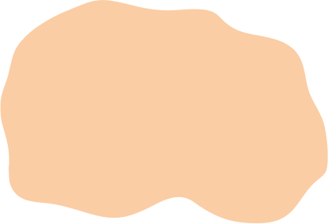
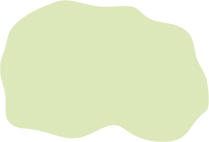
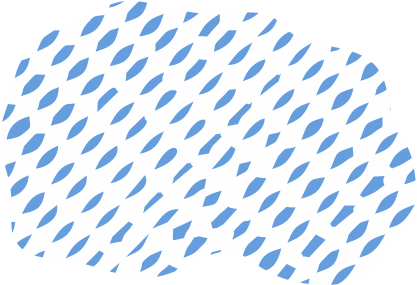

Розселення культурно-історичних спільнот в добу пізньої та фінальної бронзи (II – поч. I тис. до н. е.)
Ареали культур
|  | Прафракоіллірійський |
|  | Праслов'яно-балтійський |
|  | Прафінноугорський |
| Індо-іранський |
Межі поширення культур
| Культури Фельшесеч-Станово | |
| Тшинецької культури | |
| Комарівської культури | |
| Культури Ноуа | |
| Білогрудівської культури | |
| Сосницької та лебедівської культури | |
| Бережівсько-маївської зрубної культури | |
| Сабатинівської культури |
Пам'ятки
| Культури Фельшесеч-Станово | |
| Культури Гава-Голігради | |
| Тшинецької культури | |
| Комарівської культури | |
| Культури Ноуа | |
| Білогрудівської культури | |
| Сосницької культури | |
| Лебедівської культури | |
| Малобудківського типу | |
| Бондарихінської культури | |
| Пізнього періоду бабинської культури (багатоваликової кераміки) | |
| Покровсько-мосоловської зрубної культури | |
| Бережнівсько-маївської-зрубної культури | |
| Сабатинівської культури | |
| Білозерської культури | |
| Лужицької культури |